Para este juego necesitaremos un coche visto lateralmente, con 6 disfraces que nos servirá para elegir el
coche con el que jugaremos. Este objeto tendrá un sonido para cuando lo elijamos.
Otro objeto coche visto desde atrás (también con los seis disfraces posibles y otro más con el coche roto)
que será el coche con el que juguemos.
Otro coche más que hará de los coches que vamos adelantando.
También necesitaremos una explosión en el caso de colisionar con otro coche. Tendrá el sonido de la explosión.
Otros objetos que necesitaremos serán, papeleras y farolas que irán saliendo aleatoriamente y un objeto con
el texto de Game Over.
Añadiremos un escenario tipo garaje donde aparecerán los distintos coches que podemos elegir. Además, tendremos
tres escenarios más que simularán la carretera en movimiento.
Los escenarios llevarán también tres sonidos que serán el sonido del garaje, el del juego y el del fin del
juego.
Para descargar los objetos necesarios para el juego, lo haremos desde este link. Es un archivo comprimido con 7 objetos, 4 escenarios y 3 sonidos. Lo descargaremos y lo descomprimimos en el directorio del alumno.
El juego consiste en que tenemos que elegir un coche de nuestro garaje e ir por la carretera esquivando otros
coches.
Empezaremos por poner el escenario del garaje y programando que al empezar se ponga este escenario y esté sonando continuamente el sonido del garaje.

Ahora empezaremos a programar los coches que aparecerán en el garaje.
Vamos a necesitar una variable "Puntos" que utilizaremos más tarde y otra variable "Coche" donde almacenaremos
el número del coche que hemos elegido. Ambas serán variables "Para Todos Los Objetos".
También crearemos otras dos variables "_Coche" y "_Numero Coche" para el control del número de coche que
elegimos. Ambas serán variables "Sólo Para Este Objeto".
A partir de ahora, diferenciaremos las variables que son para todos los objetos de las que son solo para el objeto donde las creamos. Las que son solo para ese objeto, las crearemos con un "_" delante del nombre de la variable.
La única variable que tendremos visible será "Puntos" que inicialmente ocultaremos. Inicializaremos a "0" las
variables "Puntos" y "Coche", y a "1" la variable "_Numero Coche".
A continuación, colocaremos nuestro objeto en la primera posición y repetiremos 6 veces (ya que crearemos 6
coches) el crear clon e ir colocándolo en la pantalla. Iremos sumando 1 a la variable "_Numero Coche" para
identificar cada uno de ellos.
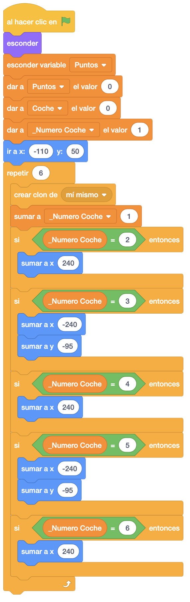
Ahora, al crear cada clon, daremos a la variable "_Coche" el valor de "_Numero Coche" para que cada coche
tenga almacenado en esta variable el número de coche que lo identifica (del 1 al 6). Cambiaremos al disfraz
que lo identifica con este valor y lo mostraremos.
A continuación, haremos un bucle hasta que seleccionemos uno de los coches en el que haremos lo siguiente.
Si pasamos por encima de cualquier coche, lo agrandaremos al 110% y si no, lo dejaremos en el 90%.
Además, si al pasar por encima, pinchamos en el coche, enviaremos un mensaje "Detener Sonido" para quitar el
sonido del garaje, haremos el sonido de selección del coche y a continuación el sonido de arranque, esperando
a que termine.
Daremos a la variable "Coche" el número de coche seleccionado, que lo tenemos guardado en la variable
"_Coche".
Una vez seleccionado el coche, que hará que nos salgamos del bucle, mandaremos el mensaje "Jugar"

Añadiremos un bloque para recibir el mensaje "Jugar", donde detendremos otros programas del objeto y esconderemos los coches.

Volvemos al escenario. Al recibir el mensaje "Jugar", mandaremos un nuevo mensaje "Escenario Juego" donde haremos el movimiento de la carretera mediante los escenarios. Detendremos todos los sonidos y haremos un bucle para poner el sonido del juego hasta que termine mientras se está jugando.

También programaremos que al recibir el mensaje "Escenario Juego", iremos poniendo cada uno de los tres escenarios de la carretera, con un intervalo de tiempo.

Vamos ahora a programar el coche que nosotros vamos a manejar. Al empezar el juego, esconderemos el coche.

Crearemos una variable "Posición X Coche" donde guardaremos la posición del coche en el eje "X" en todo
momento.
Programaremos que al recibir el mensaje "Jugar", le pondremos el disfraz que nos indica la variable "Coche"
y lo posicionamos en el centro de la parte inferior de la pantalla. Mostraremos la variable "Puntos" y el
propio objeto.
A continuación, programaremos que se mueva el coche con los cursores derecha e izquierda. Haremos un bucle
donde lo primero que haremos será apuntar hacia la derecha para que el coche quede recto.
Controlaremos si pulsamos la flecha derecha para mover el coche a la derecha, controlando que no se salga de
la carretera y haciendo un pequeño giro a la derecha para hacer un efecto de amortiguación del coche.
Lo mismo si pulsamos la flecha izquierda, moveremos a la izquierda y el giro también lo haremos a la izquierda.
Finalmente, guardaremos la posición "X" del coche en la variable "Posición X Coche"

Vamos a programar otro efecto para el coche para darle mayor realismo. Volvemos a programar otra vez que al recibir el mensaje "Jugar", hacemos un bucle donde vamos cambiando un poco el tamaño del coche de una forma aleatoria.

Programaremos a continuación el coche enemigo. Al empezar el juego, esconderemos el coche.

Ahora, al recibir "Jugar", esperaremos un poco para que empiecen a salir coches, los colocaremos al final de
la carretera y pondremos el tamaño al 0% para que después hacer que vaya creciendo y parezca que se va
acercando.
Haremos también un bucle para ir creando clones cada cierto tiempo.
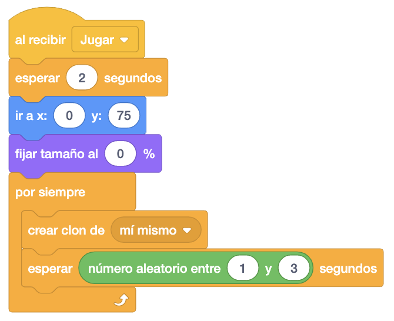
Ahora vamos a programar cada uno de los clones. Vamos a crear una nueva variable "Segundos" en la que iremos
guardando el tiempo que va a tardar el coche enemigo en llegar a nuestro coche y le daremos el valor inicial
"3". Posteriormente, ese tiempo lo iremos recortando, dependiendo de los puntos conseguidos.
Cambiaremos el disfraz del coche a uno de los 6 que tiene de forma aleatoria y lo mostraremos.
Deslizaremos el coche durante el tiempo que contenga la variable "Segundos" a la posición en "X" de nuestro
coche, guardada en la variable "Posición X Coche" y a la posición "Y" de la parte baja de la pantalla.
Una vez llegue el coche al final de la pantalla, sumaremos un punto y eliminaremos el clon del coche.
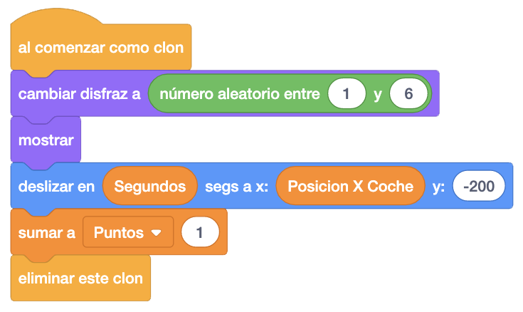
Ahora vamos a hacer un bucle, también en un "Al Comenzar Como Clon", donde iremos cambiando el tamaño del coche dependiendo de los segundos que tardará en llegar al final.
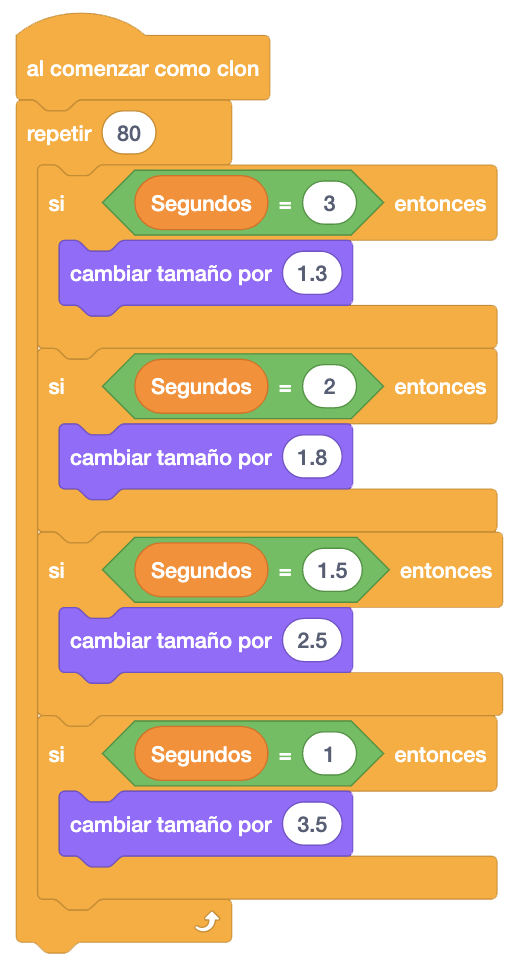
En otro bloque "Al Comenzar Como Clon", vamos a controlar que cuando se choque con nuestro coche, nos elimine.
Mandaremos un nuevo mensaje "Fin Juego" que recibiremos en el resto de objetos para terminar el juego.
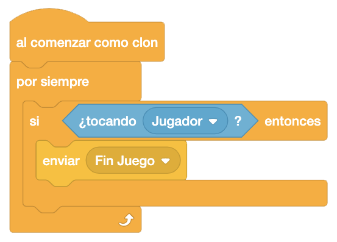
En este objeto, al recibir el mensaje "Fin Juego", detendremos otros programas del objeto y eliminaremos el clon.

Ahora, para terminar con la programación de este objeto, vamos a darle mayor velocidad al coche dependiendo de los puntos conseguidos.
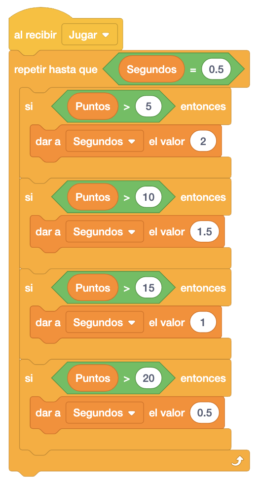
Vamos a terminar de programar también el escenario, donde añadiremos que el recibir el mensaje "Fin Juego" detengamos otros programas del objeto (para detener la música y el movimiento del escenario), pondremos el sonido de fin de juego y detenemos todo.
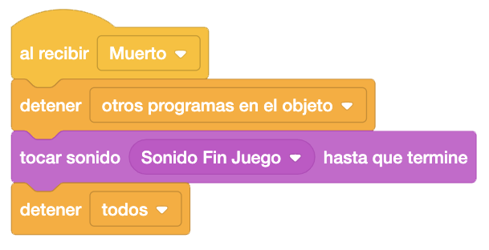
También terminaremos de programar nuestro coche con el mismo mensaje. Al recibir "Fin Juego", cambiaremos el disfraz de nuestro coche al de "Jugador Muerto" y detendremos el resto de programas del objeto.
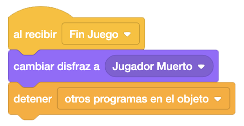
Le toca el turno al objeto explosión. Al empezar lo esconderemos como el resto de objetos.

La explosión aparecerá cuando choquen los dos coches, con lo que al recibir el mensaje "Fin Juego", lo
llevaremos a la capa delantera, la llevaremos a la posición "X" e "Y" de nuestro coche, le pondremos el
primer disfraz y lo mostraremos.
A continuación, haremos un bucle para mostrar todos los disfraces de la explosión, esperando un poco entre
cada cambio de disfraz, y lo esconderemos.
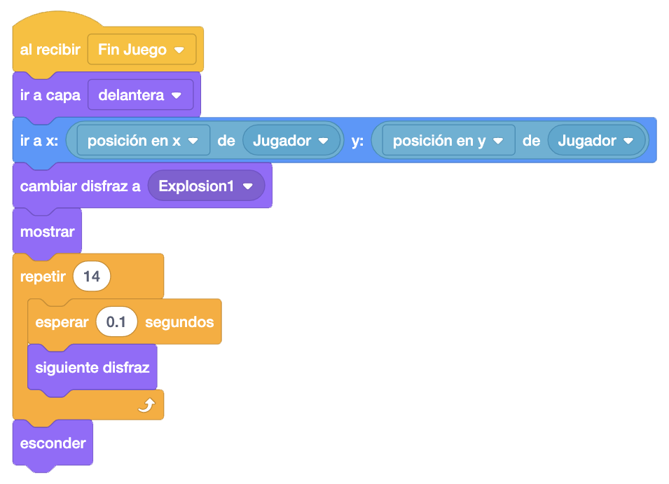
Por otro lado, y también al recibir el mensaje "Fin Juego", pondremos el sonido de la explosión.

Ahora es el momento de programar el objeto "Game Over". Crearemos una nueva variable para este objeto a la
que llamaremos "_Fin", que inicializaremos con el valor "No".
Al empezar lo esconderemos y lo pondremos en el centro de la pantalla.
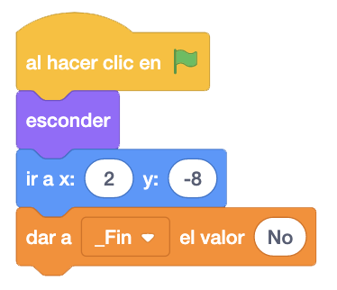
Ahora, al recibir el mensaje "Fin Juego", daremos efectos para que el mensaje salga de manera diferente.
Empezaremos por poner el efecto "Ghost" y "Pixelate" al 100%.
Le mandaremos a la capa delantera y lo mostraremos.
A continuación, controlaremos que si la variable "_Fin" es igual a "No", haremos lo siguiente; esperaremos el
tiempo necesario para que termine la explosión, repetiremos 100 veces el ir quitándole los efectos que le hemos
puesto poco a poco y haremos otro bucle para cambiarle el efecto color al texto.
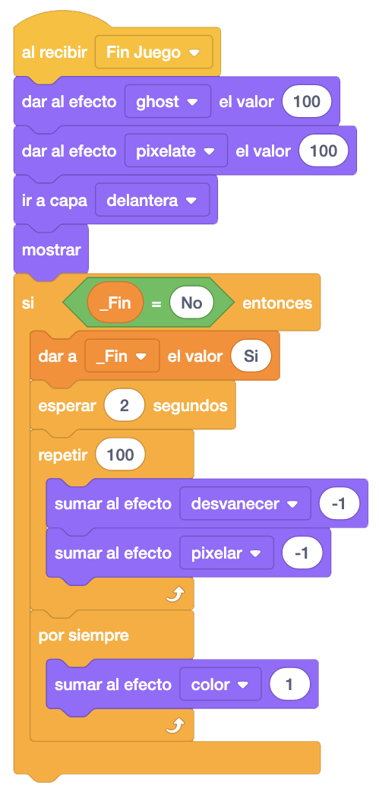
Vamos a darle un toque de profundidad y movimiento al juego con unas papeleras y farolas. Comenzaremos con
las farolas.
En el caso de las farolas, saldrá una por cada lado, alternándose y cada un tiempo fijo. Para ello, lo primero
que haremos será crear una variable "_Dirección" para el propio objeto.
Al empezar, esconderemos el objeto y le daremos a la variable "_Dirección" el valor "1".
Ahora, haremos un bucle donde iremos cambiando el valor de la variable "_Dirección" por "0" o por "1",
alternativamente, esperando un segundo después y creando un clon de la farola.
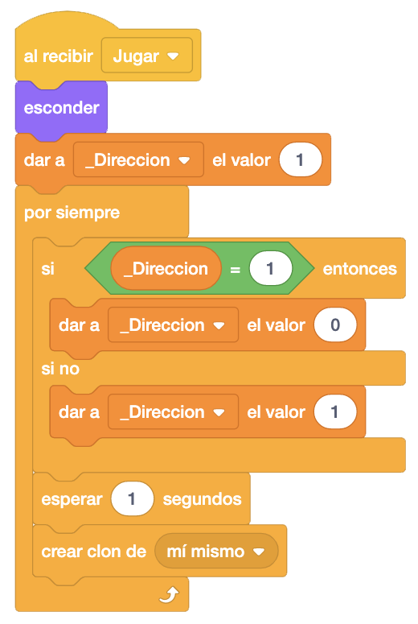
Ahora, al comenzar como clon, situamos la farola en el punto de inicio, la mostramos y dependiendo de la dirección, la deslizamos hacia la derecha o hacia la izquierda.
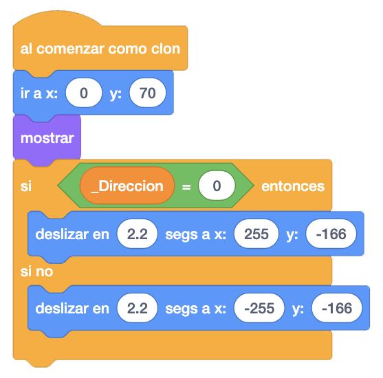
A continuación, en otro bloque "Al Comenzar Como Clon", fijaremos el tamaño al 0% e iremos aumentándolo poco a poco para que parezca que se acerca. Al final eliminaremos el clon.
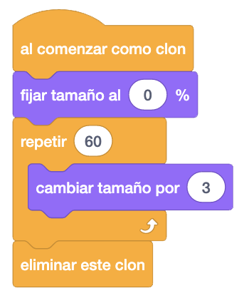
Finalmente, al recibir el mensaje "Fin Juego", detendremos el resto de programas del objeto.
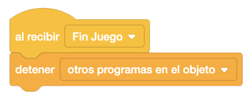
El último objeto que programaremos será la papelera. En este caso irán apareciendo aleatoriamente por la
derecha o la izquierda cada x tiempo también de forma aleatoria.
Crearemos también una variable "_Dirección" para este objeto.
Al empezar, esconderemos el objeto y haremos un bucle donde esperaremos un tiempo aleatorio para ir creando
clones.
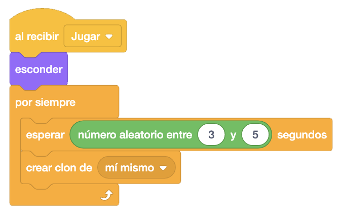
Al empezar como clon, le daremos a la variable "_Dirección" un número aleatorio entre "0" y "1" (derecha e
izquierda), lo situaremos en el punto de inicio y lo mostraremos.
Dependiendo de la dirección, la deslizamos hacia la derecha o hacia la izquierda.
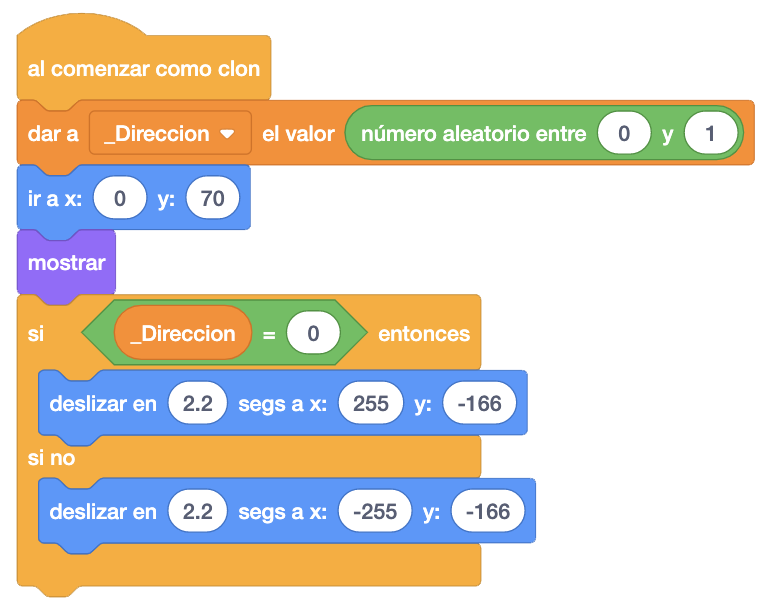
A continuación, en otro bloque "Al Comenzar Como Clon", fijaremos el tamaño al 0% e iremos aumentándolo poco a poco para que parezca que se acerca. Al final eliminaremos el clon.

Finalmente, al recibir el mensaje "Fin Juego", detendremos el resto de programas del objeto.

Un reto interesante que podemos añadir al juego es poner otro tipo de coches (camiones, motos, etc.) que vayan siempre a una dirección fija y no hacia nuestra posición.
Y el juego quedaría así.

Para ver el juego terminado pulsa
aquí.
Para descargarte el juego terminado pulsa
aquí.